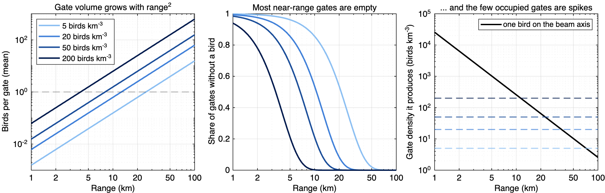
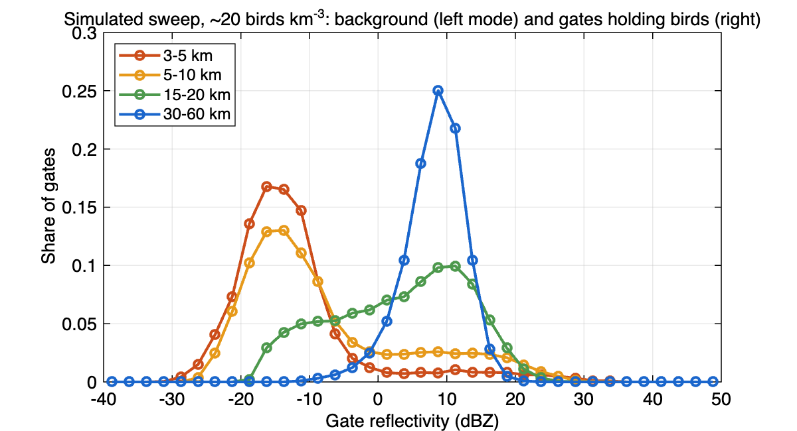
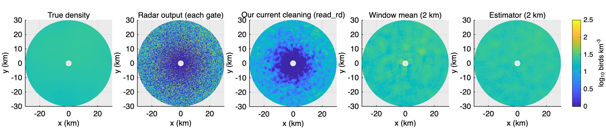
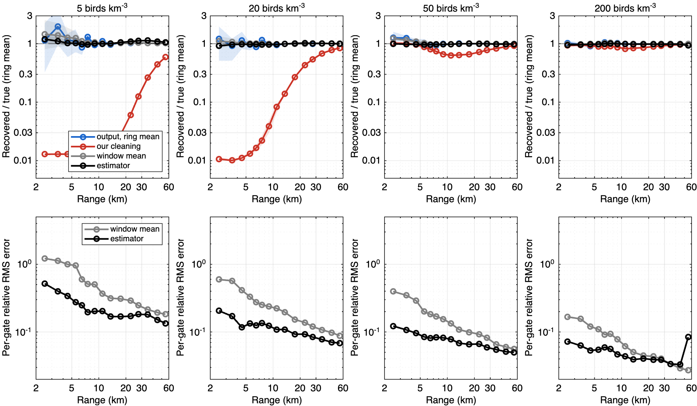
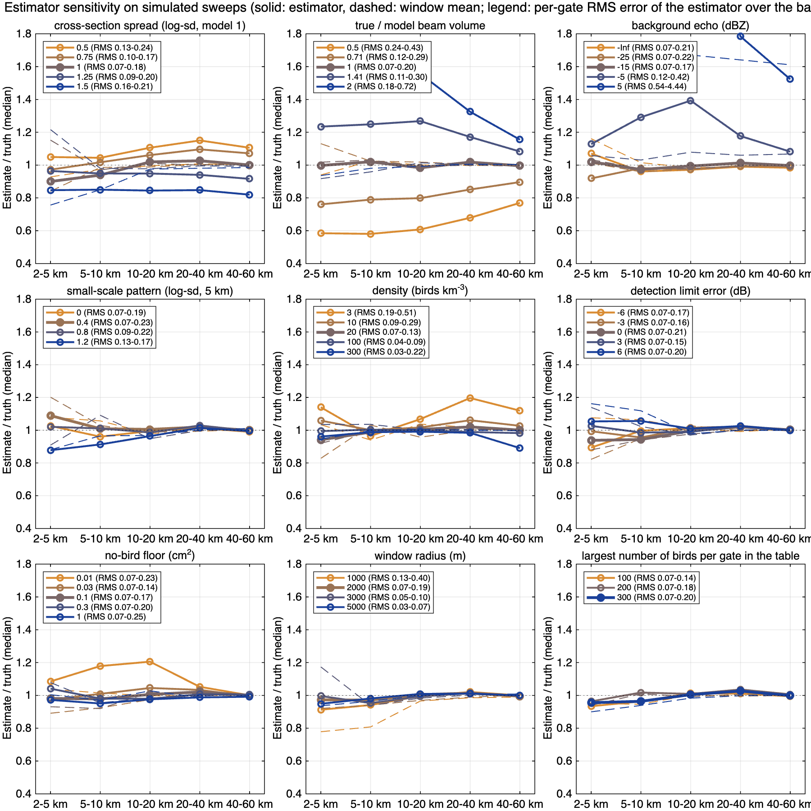
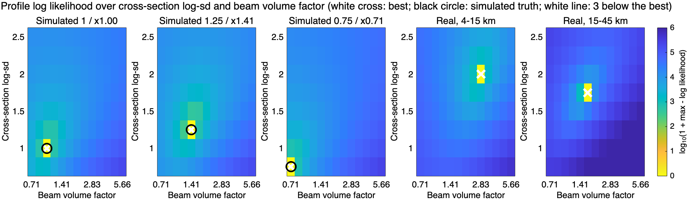
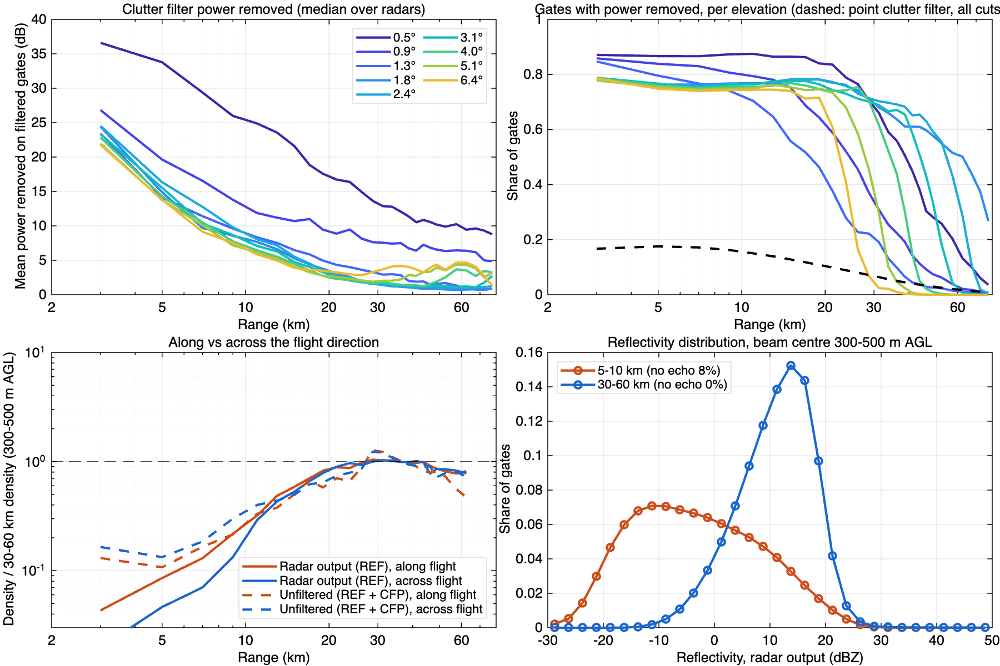
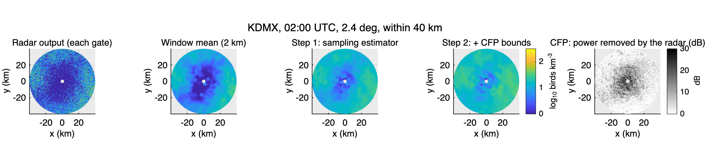
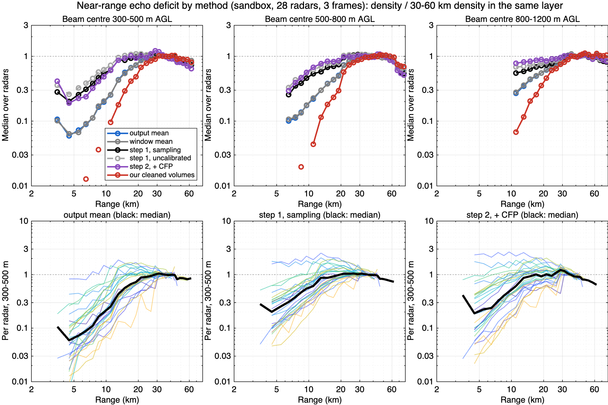

<title>Near-Range Gate Density</title>
<meta name="claude:viewport-fit-sides" content="cover">
<link rel="preconnect" href="https://fonts.googleapis.com">
<link rel="preconnect" href="https://fonts.gstatic.com" crossorigin>
<link rel="stylesheet" href="https://fonts.googleapis.com/css2?family=Newsreader:opsz,wght@6..72,500;6..72,600&family=Public+Sans:wght@400;600&family=JetBrains+Mono:wght@400;500&display=swap">
<style>
/* Layout: a single reading column (~68ch) for the argument, with figures allowed to run wider (up to 1100px), like a radar-processing technical note. */
:root {
  --bg: #f5f7f9;
  --surface: #ffffff;
  --ink: #17212b;
  --muted: #56626e;
  --rule: #d7dee5;
  --accent: #1f5fa8;      /* parula-blue: the estimator */
  --warn: #b8392b;        /* the current cleaning, as in the figures */
  --step2: #6b44a8;       /* step 2, CFP */
  --code-bg: #eef2f6;
  --font-display: "Newsreader", "Iowan Old Style", Georgia, serif;
  --font-body: "Public Sans", "Segoe UI", system-ui, sans-serif;
  --font-mono: "JetBrains Mono", ui-monospace, Menlo, monospace;
}
@media (prefers-color-scheme: dark) {
  :root:not([data-theme="light"]) {
    --bg: #11161c; --surface: #18202a; --ink: #e3e9ef; --muted: #9aa7b4; --rule: #2c3745;
    --accent: #6ea8ec; --warn: #ec8a7c; --step2: #b69be6; --code-bg: #1f2935; color-scheme: dark;
  }
}
:root[data-theme="dark"] {
  --bg: #11161c; --surface: #18202a; --ink: #e3e9ef; --muted: #9aa7b4; --rule: #2c3745;
  --accent: #6ea8ec; --warn: #ec8a7c; --step2: #b69be6; --code-bg: #1f2935; color-scheme: dark;
}
body {
  background: var(--bg); color: var(--ink); font-family: var(--font-body); font-size: 16px; line-height: 1.6;
  padding-left: max(16px, env(safe-area-inset-left, 0px)); padding-right: max(16px, env(safe-area-inset-right, 0px));
  padding-block: 40px 80px;
}
main { max-width: 1100px; margin: 0 auto; display: grid; gap: 8px; }
.prose { max-width: 68ch; }
h1, h2, h3 { font-family: var(--font-display); font-weight: 600; text-wrap: balance; line-height: 1.2; margin: 0; }
h1 { font-size: clamp(2rem, 4vw, 2.8rem); }
h2 { font-size: 1.6rem; margin-top: 40px; padding-top: 20px; border-top: 1px solid var(--rule); }
h3 { font-size: 1.2rem; margin-top: 20px; }
p, ul, ol { margin: 8px 0; }
li { margin: 4px 0; }
.eyebrow { font-family: var(--font-mono); font-size: 0.78rem; letter-spacing: 0.08em; text-transform: uppercase; color: var(--muted); }
.lede { font-size: 1.12rem; color: var(--muted); }
code, .num { font-family: var(--font-mono); font-size: 0.88em; }
code { background: var(--code-bg); padding: 1px 5px; border-radius: 4px; }
figure { margin: 16px 0; display: grid; gap: 8px; }
figure img { width: 100%; height: auto; border: 1px solid var(--rule); border-radius: 4px; background: #ffffff; }
figcaption { font-size: 0.9rem; color: var(--muted); max-width: 90ch; }
.table-wrap { overflow-x: auto; margin: 12px 0; }
table { border-collapse: collapse; font-size: 0.9rem; font-variant-numeric: tabular-nums; min-width: 520px; }
th, td { padding: 6px 12px; border-bottom: 1px solid var(--rule); text-align: right; white-space: nowrap; }
th { font-weight: 600; color: var(--muted); }
th:first-child, td:first-child { text-align: left; }
.summary { background: var(--surface); border: 1px solid var(--rule); border-radius: 6px; padding: 16px 20px; max-width: 80ch; }
.summary ul { padding-left: 20px; }
.k-est { color: var(--accent); font-weight: 600; }
.k-cur { color: var(--warn); font-weight: 600; }
.k-cfp { color: var(--step2); font-weight: 600; }
.steps { display: grid; grid-template-columns: repeat(auto-fit, minmax(260px, 1fr)); gap: 16px; margin: 12px 0; }
.steps > div { background: var(--surface); border: 1px solid var(--rule); border-radius: 6px; padding: 12px 16px; min-width: 0; }
.steps h3 { margin-top: 0; }
a { color: var(--accent); }
a:focus-visible { outline: 2px solid var(--accent); outline-offset: 2px; }
</style>

<main>
  <header class="prose">
    <p class="eyebrow">prod / gate_density · sandbox night 21–22 Oct 2026 · 28 WSR-88D radars</p>
    <h1>Bird density from radar gates near the radar</h1>
    <p class="lede">Why the radar reports too few birds close to itself, and an estimator that reads every gate as evidence instead of discarding the ones that hold birds.</p>
  </header>

  <section class="summary">
    <strong>In short</strong>
    <ul>
      <li>Close to a radar, a gate is tiny (about 0.001 km³ at 5 km). It usually holds no bird, and now and then one bird, which then looks like a very high density. The sweep is a field of rare spikes on an empty background.</li>
      <li><span class="k-cur">Our current cleaning</span> removes or flattens these spikes: outlier filters, then a moving median over 2 km. In simulation it keeps 1–14% of the birds within 15 km at 20 birds km⁻³. It also darkens low densities at every range, not only near radars.</li>
      <li><span class="k-est">The estimator (step 1)</span> assumes the density is uniform within 2 km of each gate. It models how many birds each gate holds and how strong each echo is, and finds the most likely density. It is unbiased in simulation, with a 2–4× smaller per-gate error than a plain window mean.</li>
      <li>Its two key settings, the spread of bird cross-sections and the gate volume, are <strong>calibrated from the data</strong>: log-sd 1.75 and volume ×1.68. With them, the estimate at 30–60 km matches the radar's own mean (52 against 51 birds km⁻³).</li>
      <li>On the real sweeps, step 1 removes the near-range deficit beyond about 17 km and cuts it within 10 km (0.06 → 0.20 at 4.5 km, 300–500 m). The rest comes from <strong>the radar's own clutter filter</strong>, which acts on about 97% of gates within 10 km. <span class="k-cfp">Step 2</span> uses the radar's record of that filtering (CFP). It helps higher up but is not yet reliable low down.</li>
    </ul>
  </section>

  <h2>1. The problem</h2>
  <div class="prose">
    <p><strong>Near-range echo deficit.</strong> Within one volume, the bird density a radar reports for a given height above ground falls as the gate gets closer to the radar. Measured as D(r) = density at range r / density at 30–60 km in the same layer, it should be about 1 if birds are spread evenly around the radar. On the sandbox night, the radar's own output at 300–500 m gives D = 0.06 at 4.5 km, 0.25 at 11 km and 0.57 at 15 km, and only reaches 1 at about 29 km. Every radar shows it. In the maps this becomes the dark disc at each radar.</p>
    <p>Two different things produce it, and this note separates them:</p>
    <ul>
      <li><strong>Sampling.</strong> Gates near the radar hold too few birds for spike-removing or median filters. This is in our processing, and step 1 fixes it.</li>
      <li><strong>The radar's clutter filter.</strong> It removes power from almost every gate near the radar, birds included. This is in the radar's processing. Step 2 is a first attempt to account for it.</li>
    </ul>
  </div>

  <h2>2. What a gate sees</h2>
  <div class="prose">
    <p>A gate's volume grows with range²: 250 m long and one beam width (about 0.95°) wide. At 20 birds km⁻³, a gate holds on average 0.03 birds at 2 km, 0.6 at 10 km and 6 at 30 km. One bird on the beam axis at 5 km produces the reflectivity of about 1,000 birds km⁻³; at 50 km it is about 10. So near the radar, most gates are empty, and the few occupied ones are spikes that carry nearly all the birds.</p>
  </div>
  <figure>
    
    <figcaption>Birds per gate, the share of empty gates, and the density one bird produces, against range, for 5–200 birds km⁻³. The model used throughout: 0.95° Gaussian two-way beam, 250 m gates, cross-sections lognormal with mean 11 cm².</figcaption>
  </figure>
  <figure>
    
    <figcaption>Simulated sweep at about 20 birds km⁻³. Near the radar the gate values have two modes: the weak background (insects, noise) and gates holding a bird. From about 15 km out they merge into one mode, around the true density.</figcaption>
  </figure>

  <h2>3. Why our current processing loses birds</h2>
  <div class="prose">
    <p>Our cleaning (<code>read_rd</code> and <code>clean_volume</code>, prod settings) applies these steps in order:</p>
    <ol>
      <li>a density cap (3000 birds km⁻³);</li>
      <li>sweep-wide outlier removal (median ± 3 MAD in dBZ);</li>
      <li>a 5 × 5 continuity filter;</li>
      <li>no-echo gates set to 0;</li>
      <li>moving medians over 2 km along range and along azimuth.</li>
    </ol>
    <p>Each step treats a lone strong gate as an error. Where a gate holds less than one bird on average, the median of a window is the value of an empty gate. The copy of these steps in <code>gd_read_rd_filters</code> was run on simulated sweeps with known density.</p>
  </div>
  <figure>
    
    <figcaption>One simulated sweep (about 20 birds km⁻³ with a gentle pattern), within 30 km. Our current cleaning makes a dark disc of about 15 km radius out of a uniform field. A plain linear window mean and the estimator both recover the field; the estimator is smoother.</figcaption>
  </figure>
  <figure>
    
    <figcaption>Top: recovered / true density by range (ring means of 3 simulated sweeps; band: range over sweeps). Bottom: per-gate relative RMS error of the window mean and the estimator.</figcaption>
  </figure>
  <div class="table-wrap">
    <table>
      <thead><tr><th>Range</th><th>20 birds km⁻³: current cleaning</th><th>window mean</th><th>estimator</th><th>per-gate error, window mean / estimator</th><th>200 birds km⁻³: current cleaning</th></tr></thead>
      <tbody>
        <tr><td>2.5 km</td><td class="num">0.01</td><td class="num">1.10</td><td class="num">0.92</td><td class="num">0.59 / 0.21</td><td class="num">0.93</td></tr>
        <tr><td>5.5 km</td><td class="num">0.01</td><td class="num">1.02</td><td class="num">0.97</td><td class="num">0.33 / 0.13</td><td class="num">0.89</td></tr>
        <tr><td>11 km</td><td class="num">0.08</td><td class="num">0.97</td><td class="num">0.97</td><td class="num">0.22 / 0.11</td><td class="num">0.82</td></tr>
        <tr><td>17.5 km</td><td class="num">0.27</td><td class="num">0.99</td><td class="num">1.02</td><td class="num">0.15 / 0.09</td><td class="num">0.86</td></tr>
        <tr><td>27.5 km</td><td class="num">0.54</td><td class="num">1.00</td><td class="num">1.02</td><td class="num">0.12 / 0.08</td><td class="num">0.92</td></tr>
        <tr><td>55 km</td><td class="num">0.84</td><td class="num">1.01</td><td class="num">0.99</td><td class="num">0.09 / 0.07</td><td class="num">0.97</td></tr>
      </tbody>
    </table>
  </div>
  <div class="prose">
    <p>The bias of our cleaning depends on density: at 5 birds km⁻³ it keeps 1–3% up to 17 km and 45% at 45 km; at 200 birds km⁻³ it keeps 82–97%. Low-density areas and the edges of migration fronts are darkened, wherever they are. Of all the steps, the moving-median smoothing does most of the damage.</p>
  </div>

  <h2>4. The suggested approach</h2>
  <div class="prose">
    <p><strong>Model.</strong> Around a gate, the birds are taken as a random (Poisson) scatter with density ρ. A gate at range r then holds N ~ Poisson(ρ V(r)) birds. Each bird adds its cross-section σ times the beam weight w at its position. The distribution of the gate's summed contribution s = Σσw is tabulated once for N = 0…600 by Monte Carlo (<code>gd_bird_sum_table</code>). It does not depend on range: the range only enters through V(r).</p>
    <p><strong>Every gate is an interval, not a value</strong> (<code>gd_gate_bounds</code>):</p>
    <ul>
      <li>an echo is exact to ±0.25 dB;</li>
      <li>no echo means below the detection limit at that range;</li>
      <li>a value below 1% of one mean bird cannot be told from no bird (insects, noise), so its lower end is open.</li>
    </ul>
    <p>No gate is removed. The probability of each gate's interval is computed for 48 densities, summed over the window, and the maximum is refined by a parabola. The result is a density and an approximate 95% interval per gate (<code>gd_estimate_sweep</code>, about 0.6 s per 60 km sweep).</p>
    <p><strong>Window.</strong> The window holds all gates within 2 km of the gate: ±2 km along range and the same arc length along azimuth. This is the box shape of the <code>read_rd</code> smoothing, a fast approximation of an x–y radius, computed with moving sums (<code>gd_window_sum</code>). The plain linear mean over the same window (<code>gd_window_mean</code>) is shown everywhere as the simplest unbiased alternative.</p>
  </div>
  <div class="steps">
    <div>
      <h3>Step 1: sampling</h3>
      <p>The radar output is read as exact. This corrects what <em>our</em> processing does wrong and handles the rare-spike statistics. On real data it also recovers part of the radar's filter loss: a bird whose echo was weakened still makes its gate stand out from empty gates, and the estimator counts it.</p>
    </div>
    <div>
      <h3>Step 2: + the radar's clutter filter (CFP)</h3>
      <p>On top of step 1, uses the CFP moment (section 7). A gate whose power was removed lies between its output and its output + CFP. A gate replaced by the point filter is at least its output. This targets what <em>the radar</em> does. Step 1 comes first and stands alone; step 2 is an option added to the same likelihood.</p>
    </div>
  </div>

  <h2>5. Sensitivity</h2>
  <div class="prose">
    <p>Each panel changes one factor around the base case: 20 birds km⁻³ with a gentle pattern, 2 km window, background −15 dBZ. Data-side factors make the world differ from the model; model-side factors change the estimator's settings. The scores are the median estimate / true window-mean density (solid) and the window mean (dashed), by range band.</p>
  </div>
  <figure>
    
    <figcaption>Estimator sensitivity on simulated sweeps. The legend gives the estimator's per-gate RMS error over the bands for each level.</figcaption>
  </figure>
  <div class="table-wrap">
    <table>
      <thead><tr><th>Factor (base)</th><th>Levels</th><th>Estimator bias, worst level</th><th>Reading</th></tr></thead>
      <tbody>
        <tr><td>Gate volume, true / model (1)</td><td class="num">0.5 – 2</td><td class="num">0.58 / 1.67</td><td style="text-align:left">Decisive near the radar, smaller far out: calibrate.</td></tr>
        <tr><td>Cross-section spread, log-sd (1)</td><td class="num">0.5 – 1.5</td><td class="num">1.15 / 0.82</td><td style="text-align:left">±15–18% at all ranges: calibrate.</td></tr>
        <tr><td>Background echo (−15 dBZ)</td><td class="num">none – +5 dBZ</td><td class="num">1.39 at −5, 5.5 at +5</td><td style="text-align:left">Only matters when as strong as the birds (+5 dBZ ≈ 6 birds km⁻³); the window mean then fails too.</td></tr>
        <tr><td>Small-scale pattern, log-sd over 5 km (0.4)</td><td class="num">0 – 1.2</td><td class="num">0.88</td><td style="text-align:left">Robust; only strong patchiness within the window at 2–5 km.</td></tr>
        <tr><td>Density (20)</td><td class="num">3 – 300</td><td class="num">1.20 at 3</td><td style="text-align:left">Robust above 10 birds km⁻³.</td></tr>
        <tr><td>Detection limit error (0 dB)</td><td class="num">±6 dB</td><td class="num">0.89 / 1.06</td><td style="text-align:left">Robust.</td></tr>
        <tr><td>No-bird floor (0.1 cm²)</td><td class="num">0.01 – 1</td><td class="num">1.21 at 0.01</td><td style="text-align:left">Robust from 0.03; too low counts background as birds.</td></tr>
        <tr><td>Window radius (2 km)</td><td class="num">1 – 5 km</td><td class="num">0.91 at 1 km</td><td style="text-align:left">Unbiased; larger windows lower the error (0.20 → 0.07 at 2–5 km) at the cost of detail.</td></tr>
        <tr><td>Largest N in the table (300)</td><td class="num">100 – 300</td><td class="num">0.93</td><td style="text-align:left">Irrelevant here; 600 used on real data for dense far gates.</td></tr>
      </tbody>
    </table>
  </div>

  <h2>6. Calibration</h2>
  <div class="prose">
    <p>The two settings that matter most both change the <em>shape</em> of the gate distribution, so they can be estimated from the data. For each pair (cross-section log-sd, volume factor) on a grid, the density of every independent range ring of every sweep is estimated, and the maximum log likelihoods are summed. The floor is held at the same reflectivity for every pair, so all pairs score the same data.</p>
    <p><strong>Check on simulated sweeps:</strong> the method recovers all three true pairs exactly: (1, ×1), (1.25, ×1.41) and (0.75, ×0.71).</p>
    <p><strong>Real sweeps</strong> (10 radars, frame 3, cuts below 3.5°):</p>
    <ul>
      <li>Rings at 15–45 km, where the radar filters little, give log-sd 1.75 and volume ×1.68.</li>
      <li>Rings at 4–15 km give log-sd 2.0 and volume ×2.83. That they differ is itself a sign that the radar's filtering distorts the near gates.</li>
      <li>The 15–45 km pair is used from here on.</li>
    </ul>
    <p>Volume ×1.68 corresponds to an effective beam of about 1.23°, plausible for super-resolution radials broadened by antenna rotation. A log-sd of 1.75 is wider than individual birds' cross-sections alone. It also absorbs aspect-angle changes, pulse-to-pulse fluctuation and mixtures of species and insects.</p>
  </div>
  <figure>
    
    <figcaption>Profile log likelihood (colour: log₁₀(1 + max − log likelihood); white line: 3 below the best). The three left panels are simulated, with the truth circled. The two right panels are the real sweeps at 4–15 km and 15–45 km.</figcaption>
  </figure>

  <h2>7. What the radar does: the clutter filter and CFP</h2>
  <div class="prose">
    <p>The WSR-88D removes ground clutter before it outputs reflectivity:</p>
    <ul>
      <li><strong>GMAP clutter filter.</strong> It cuts the power near zero radial velocity from each gate's Doppler spectrum and rebuilds the rest. A bird flying across the beam has a near-zero radial velocity and loses most of its echo, and a wider notch around strong clutter takes more.</li>
      <li><strong>Where it is applied.</strong> Since 2009, the CMD algorithm decides per gate from phase stability, reflectivity texture and gradient sign changes. It runs on the lowest split cuts; higher cuts follow bypass maps or operator-set regions. CMD leaves moving targets unfiltered by design, so unfiltered gates are biased towards birds.</li>
      <li><strong>CFP</strong> (in Level II files since RDA Build 19, about 2020). It records, per gate, the power the filter removed (dB, code − 8). Code 0 means "filter not applied", 1 "point clutter filter applied" and 2 "only dual-pol moments filtered".</li>
    </ul>
    <p>We read it with <code>read_level2_moments</code>, because <code>rsl2mat</code> does not.</p>
  </div>
  <figure>
    
    <figcaption>Sandbox, 28 radars × 6 frames, 300–500 m above ground where relevant. Within 20–30 km, 75–88% of gates have power removed at every elevation: 20–25 dB at 3 km, about 8 dB at 10 km, 2–3 dB at 25 km at 1.3° and above. Within 10 km, birds flying across the beam lose about half again. Near-range output values are shifted about 10 dB down, and the bird spikes are missing.</figcaption>
  </figure>
  <div class="prose">
    <p>CFP is the total removed power, ground clutter included. Near the radar most of it is clutter, so output + CFP is a loose upper bound on the bird echo. In a simulated test where clutter dominates the removed power, using CFP as an upper bound pushes the estimate far too high. So step 2 needs the bound to be informative; it cannot simply add CFP back.</p>
  </div>

  <h2>8. Results on the real sweeps</h2>
  <div class="prose">
    <p>The sandbox sweeps (28 radars, frames 2, 4, 6, cuts below 4.5°): every method on the same gates and the same 2 km window. Calibrated settings apply unless marked otherwise.</p>
  </div>
  <figure>
    
    <figcaption>KDMX, 02:00 UTC, 2.4°. The window mean keeps the radar's dark centre, while steps 1 and 2 fill most of it. The CFP map shows where the radar removed power: almost everywhere within 15 km.</figcaption>
  </figure>
  <figure>
    
    <figcaption>D(r) = density / density at 30–60 km in the same layer. Top: median over radars, by layer. Bottom: one line per radar, 300–500 m.</figcaption>
  </figure>
  <div class="table-wrap">
    <table>
      <thead><tr><th>Range, 300–500 m</th><th>Output mean</th><th>Window mean</th><th>Our cleaned</th><th>Step 1</th><th>Step 1, uncalibrated</th><th>Step 2, + CFP</th></tr></thead>
      <tbody>
        <tr><td>4.5 km</td><td class="num">0.06</td><td class="num">0.06</td><td class="num">0.01</td><td class="num">0.20</td><td class="num">0.26</td><td class="num">0.19</td></tr>
        <tr><td>8.5 km</td><td class="num">0.16</td><td class="num">0.17</td><td class="num">0.04</td><td class="num">0.47</td><td class="num">0.57</td><td class="num">0.41</td></tr>
        <tr><td>13 km</td><td class="num">0.43</td><td class="num">0.43</td><td class="num">0.18</td><td class="num">0.87</td><td class="num">0.95</td><td class="num">0.87</td></tr>
        <tr><td>17 km</td><td class="num">0.66</td><td class="num">0.66</td><td class="num">0.41</td><td class="num">0.93</td><td class="num">1.07</td><td class="num">1.01</td></tr>
        <tr><td>21 km</td><td class="num">0.89</td><td class="num">0.86</td><td class="num">0.68</td><td class="num">1.04</td><td class="num">1.08</td><td class="num">1.01</td></tr>
        <tr><td><em>800–1200 m</em>, 11 km</td><td class="num">0.27</td><td class="num">0.28</td><td class="num">0.07</td><td class="num">0.55</td><td class="num">0.68</td><td class="num">0.78</td></tr>
        <tr><td>800–1200 m, 17 km</td><td class="num">0.49</td><td class="num">0.50</td><td class="num">0.26</td><td class="num">0.69</td><td class="num">0.75</td><td class="num">0.87</td></tr>
        <tr><td>Density at 30–60 km, 300–500 m (birds km⁻³)</td><td class="num">51</td><td class="num">52</td><td class="num">39</td><td class="num">52</td><td class="num">45</td><td class="num">78</td></tr>
      </tbody>
    </table>
  </div>
  <div class="prose">
    <ul>
      <li><strong>Our cleaned volumes are the furthest off.</strong> Their density at 30–60 km is also 24% below the radar's own mean (39 against 51).</li>
      <li><strong>A plain window mean equals the output mean.</strong> It is unbiased for sampling but keeps the radar's own filter loss.</li>
      <li><strong>Step 1 removes the deficit beyond about 17 km</strong> and reduces it by 3× within 10 km. Calibrated, it agrees with the output mean at 30–60 km (52 against 51). Uncalibrated, it reads 12% low there, which makes its D look better than it is.</li>
      <li><strong>Step 2 helps higher up</strong> (800–1200 m: 0.78 against 0.55 at 11 km). In the low layers it inflates the reference to 78 birds km⁻³, because CFP at 0.5–0.9° includes ground clutter out to 60 km. As it stands, it cannot be used below about 1.5°.</li>
      <li><strong>What remains within 10 km</strong> (D 0.2–0.5) is the radar's filtering of about 97% of gates there.</li>
    </ul>
  </div>

  <h2>9. Limits and next steps</h2>
  <div class="prose">
    <ul>
      <li><strong>Use step 1 in the cleaning.</strong> Replace the outlier, continuity and moving-median steps of <code>read_rd</code> / <code>clean_volume</code> by <code>gd_estimate_sweep</code> on the calibrated model, keeping the 3000 cap for clutter and rain. Then rebuild the sandbox case and rerun the radar-distance curves and the inversion.</li>
      <li><strong>Calibrate per volume or per night.</strong> The profile likelihood takes about 15 min per grid on 10 volumes; a coarse search around the night's value would be enough. Check it on more nights and seasons.</li>
      <li><strong>Step 2.</strong>
        <ul>
          <li>Use CFP only where the removed power is plausibly birds: above the clutter elevation, or capped.</li>
          <li>Better, model the notch loss from each gate's radial velocity relative to the bird flight direction (VEL is in the files).</li>
          <li>Check the CFP codes against the ROC interface document; it could not be downloaded here.</li>
        </ul>
      </li>
      <li><strong>Background echo</strong> (insects) as strong as the birds biases both the estimator and any mean. That is a classification problem (dual-pol), outside this estimator.</li>
      <li><strong>Overlapping radials</strong> make the likelihood intervals too narrow; use them for relative weights, not as calibrated errors.</li>
      <li><strong>Far range:</strong> at 300–500 m the estimate falls beyond 45 km (0.73 at 62 km), where the beam is only partly filled with birds. The window mean is the better choice there.</li>
    </ul>
    <p class="eyebrow">Scripts: GD_A_illustration · GD_B_sensitivity · GD_C_calibration · GD_D_sandbox (prod/gate_density/scripts)</p>
  </div>
</main>
